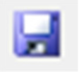
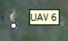
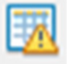
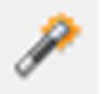
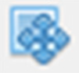

Completing this assignment you will generate orthomosaic and Digital Surface Model using pictures taken from the UAS Trimble UX5 Rover (Flight mission executed on June 20th 2015). The Study area is located at Lake Wheeler COA. Additionally you will be able to see the processing results in the generated report and optionally you will be able to export also 3D model and Point cloud as well as Camera calibration and orientation data.
The process can be very time consuming (depending on computational power of your device and desired quality) so if you are unable to execute the whole step the intermediate results are provided in the separate project files here
In order to minimize the processing time, we will process only fraction of the data collected and we will use imagery downsampled by 50%. It will allow us to generate outputs in the classroom. The resolution of ortophoto and DSM will be lower, but the high quality and full extent files are provided in the GRASS location
General workflow (with GCPs):
Flight over Mid Pines Area on June 20th 2015, conducted by NGAT with UX5 Aerial Imaging Rover
When launching PhotoScan for the first time, some settings need to be adjusted to optimize performance. These settings need to be done only once, at the first use of PhotoScan, and are loaded by default in subsequent sessions.
Menu > Tools > Preferences
General tab:
OpenCL TAB:
Advanced tab:
In order to localize the GCPs first a preliminary simple model needs to be build.
Menu > Workflow > Add Photos
Indicate the path to the folder (downloaded data) containing photos and select them all.
In the Reference panel, you can see that the photos has been loaded, but the coordinate system indicates local coordinates. It can be changed in the Settings.
Click the
settings icon  > change coordinate system to WGS
84
> change coordinate system to WGS
84
Click Import button on the Reference pane toolbar > select file containing camera positions information (log file*) in the Open dialog.

*Agisoft support the camera orientation files in 5 formats: .csv, .txt, .tel, .xml and and .log. The default format of the Trimble Aerial Imaging log is .jxl. In order to convert the Trimble .jxl log file please use script by Vaclav Petras or use provided already converted log in .txt format
Make sure that the columns are named properly – you can adjust their placement by indicating column number (top right of dialog box)
Menu > Workflow > Align Photos
Click Save  in the toolbar
Menu > Workflow > Build Dense Point Cloud
Click Save in the toolbar
Click Import button on the Reference pane toolbar > select file containing Ground Control Points coordinates in the Open dialog
Make sure that the columns are named properly – you can adjust their placement by indicating column number (top right of dialog box). Notice that the file contains Easting and Northing values, which are NOT latitude and longitude
This time you disable the Load orientation option since GCPs are stationary and do not need determining yaw pitch and roll angles.
The window with the message: Can’t find match for ‘UAV 1’ entry. Create new marker? will pop up.
Choose ‘Yes to All’ – it will create new marker for each of the named GCPs from the file. They will be listed in Reference pane under the list of photos.
Now you need to find each of the GCPs and indicate its localization on all photos depicting it.
The sample used for this processing do not cover all the GCPs. The Mode pane shows approximate positions of GCPs, it is better visible if the ‘Show cameras’ option is disabled (Menu > View > Show/Hide Items > Show cameras)
Choose in the context menu of the selected point on the list (right click) > Filter Photos by Marker. If the marker does not appear on any photo (the list of thumbnail is empty) it means that it is located outside of our sample area and you can remove this Marker (right click > Remove Marker). You should end up with 4 markers
In the Photos pane appear only the images in which the currently selected GCP is probably visible.
Open an image by double clicking the thumbnail. It will open in a tab next to the Model pane.
The GCP will appear as a grey icon . This icon needs to be moved to the middle of GCP visible on the photo
Drag the marker to the correct measurement position. At that point, the marker will appear as a green flag, meaning it is enabled and will be used for further processing.
Double click on the next photo and repeat the steps. As soon as the GCP marker position has already been indicated on at two images, the proposed position will almost exactly match the point of measurement. You can now slightly drag the marker to enable it (turning it into a green flag) or leave it unchanged (gray marker icon) to exclude it from processing.
Filter photos my each marker again. Agisoft adjusts the GCP posisions on the run, so you can locate the GCP on additional images that will appear in the Photos pane.
In this sample processing we will include 4 GCPs. Mathematically, you need to indicate marker positions for at least 3 GCPs. Accurate error estimates can be calculated with at least 4 GCPs, while often at least 5 are needed to cover the center of the project as well, which reduces the chance of error propagation and resulting terrain distortions especially on flat or undulating terrain types.
Click Save in the toolbar
You can see the errors by clicking on the View Errors icon 
Best results are obtained when the alignment is first optimized based on the camera coordinates only, and a second time based on the GCP only.
In the Ground Control pane:
Click Settings icon  in the Ground Control toolbar:
in the Ground Control toolbar:
Click Optimize icon  in the Ground Control toolbar (leave all options at the default)
In the Ground Control pane:
Click Settings icon  in the Ground Control toolbar:
in the Ground Control toolbar:
click Optimize icon in the Ground Control toolbar (leave all options at the default)
Click Save in the toolbar
You can now seehow much the errors were reduced through optimization by clicking on the View Errors icon
Before starting the Build Geometry step it is recommended to check the bounding box of the reconstruction (to make sure that it includes the whole region of interest, in all dimensions). The bounding box should also not be too large (increased processing time and memory requirements).
The bounding box can be adjusted using the Resize Region  and the Rotate Region tool from the toolbar. Make sure that the base (red plane) is at the bottom.
The next steps will be time consuming (depending on the desired quality and number of pictures).You can execute them one step at the time, what would be explained below. You can also set a batch processing that does not require user interaction until the end of geoprocessing (especially useful in case of Ultra High quality that requires even several days of processing). The batch processing will be explained at the end of this section.
Menu > Workflow > Build Dense Cloud
*Take into consideration the RAM size requirements for the different target qualities with respect to the number of images (in appendix or in lecture slides).

Click Save in the toolbar
Menu > Workflow > Build Mesh
*Face count set at “0” means that PhotoScan will determine an optimum number of faces (but this may not be enough to describe all the features on terrain)
Menu > Workflow > Build Texture
Click Save in the toolbar
Sometimes it is necessary to edit geometry before building texture atlas and exporting the model.
If the overlap of the original images was not sufficient, the model can contain holes. In this case to obtain holeless model use Close Holes command
Menu > Tools > Mesh > Close Holes
In Close Holes dialog select the size of the largest hole to be closed (in percentage of the total model size).
This does not apply to our data, since we have sufficient image overlap. But due to strong dependency on weather conditions, the holes in data are common with UAS.
Menu > Workflow > Batch process > Add
Batch processing allows to set multiple process in the preset order and execute it one after another without user intervention. All the parameters should be set the same as explained above.
If the process takes really long time on your device, you can cancel the processing and work with the project files saved on the google drive (after each time consuming step, the project file was saved and you can work starting from this step). The only adjustment you need to make is to change the path of the pictures to the localization of downloaded images on your computer.
In order to do that right clik on any of the pictures in the Pictures pane and choose Change Path... and in the dialog window mark the All cameras option. This will automatically apply the updated location to all the pictures in the project.
This option will be disabled if you are working in the demo version of Agisoft. You can switch to full function mode with 30-day trial license for free. (click link and request a trial code via email)
File > Export Orthophoto > Export JPEG/TIFF/PNG…
Fill out the desired name and save as type TIFF/GeoTIFF (*.tif)
Menu > File > Export DEM…
Fill out the desired name) and save as type TIFF/GeoTIFF (*.tif)
Menu > File > Generate report
Indicate the name and path for the PDF file
Menu > File > Export model > OBJ/FBX/KMZ…
Indicate the name, path and format of the output model
PhotoScan supports model export in the following formats: Wavefront OBJ, 3DS file format, VRML, COLLADA, Stanford PLY, STL models, Autodesk FBX, Autodesk DXF, Google Earth KMZ, U3D, Adobe PDF. Some file formats (OBJ, 3DS, VRML, COLLADA, PLY, FBX) save texture image in a separate file. The texture file should be kept in the same directory as the main file describing the geometry.
Menu > File > Export points…
Indicate the name, path and format of the output file
PhotoScan supports point cloud export in the following formats: Wavefront OBJ, Stanford PLY, XYZ text file format, ASPRS LAS, ASTM E57, U3D,Potree,PhotoScan OC3, PDF,
Menu > Tools > Export > Export Cameras
Indicate the name, path and format of the output file
PhotoScan supports camera data export in the following formats: PhotoScan structure file format (XML based), Bundler OUT file format, CHAN file format, Boujou TXT file format, Omega phi Kappa text file format, PATB Exterior orientation, BINGO Exterior orientation, AeroSys Exterior orientation, Inpho project file.